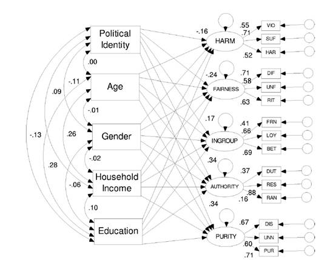
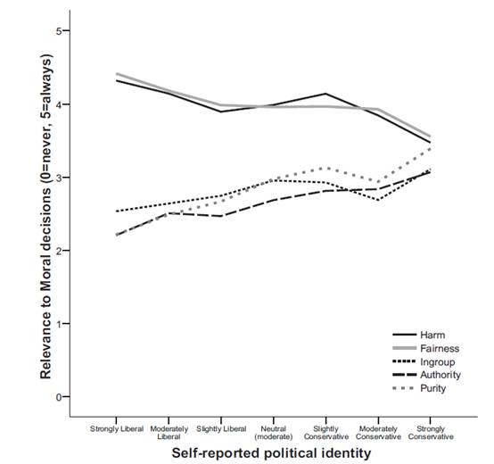
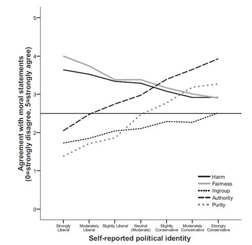
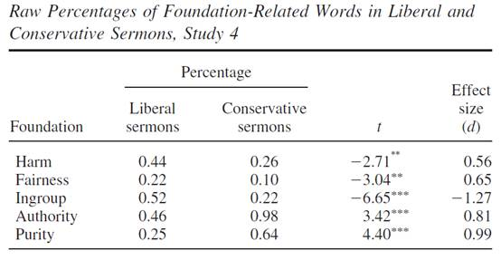
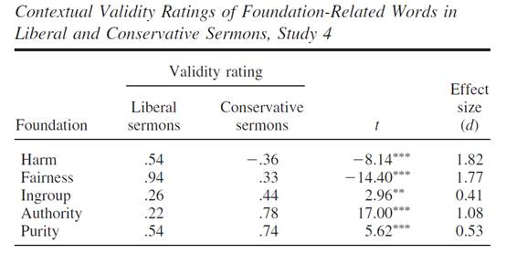

收录于合集 #政治心理 9个
文献来源: Graham, J, J.Haidt, and B. A. Nosek. “Liberals and conservatives rely on different setsof moral foundations. " Journal of Personality & Social Psychology 96.5(2009):1029.
作者简介 ： Jonathan Haidt，社会心理学家，纽约大学教授，专攻道德心理,畅销书作家，TED演讲者，被媒体誉为“国际顶尖思想家”。
导语
在激烈的意识形态争论中，左派和右派都认为自己是正义的，而指责对方是非道德的。为什么会出现相互冲突的“正义之心”呢？有人认为，这是因为左派和右派关注的领域和利益不同，他们争论的焦点无非是政治议程的轻重缓急。但也有学者指出，左派和右派所谓的“道德”本身就不一样，他们用来评判善恶的标准并不同源。循着后一种逻辑，小编今天为大家带来一篇经典的政治心理学文献，邀请大家一起来探究政治倾向背后的道德基础。
- 理论与假设
作者认为，道德的功能在于对个体的自私进行一定程度的压制，从而使社会生活成为可能。从起源来看，道德可以分为两类。一类道德直接起源于对个体的保护，譬如不受侵犯的自由与权利；而另一类道德则起源于集体生活的规范，譬如对权威和秩序的服从。根据作者的研究与提炼，纷繁复杂的道德可以归纳为五个道德基础：伤害/照顾；公平/互惠；集体/忠诚；权威/尊重；纯洁/神圣（Harm/care, Fairness/reciprocity,Ingroup/loyalty, Authority/respect, and Purity/sanctity）。前两种为个体型道德基础（individualizing foundations），后三种则为关系型道德基础（binding foundations）。
既有研究表明，保守派和自由派拥有不同的心理学特质。（链接：保守派到底在想什么？）作者在此基础上提出假设：保守派和自由派评判善恶的标准也不尽相同。换言之，保守派和自由派对上文五种道德基础的敏感程度和信服程度有显著差异。在文章中，作者交替使用了结构方程模型、广义线性模型、比较平均数和内容分析等研究方法。
- 道德的相关性
如果作者的假设成立，那么首先需要明确，左派和右派在评判善恶时会各自“调用”哪些道德标准呢？为此，作者对1,613名成年被试展开实验。作者首先收集了他们的基本信息，并要求他们对自己的政治倾向进行自评，随后对被试提问“当你评判某事对错时，下述考虑事项在多大程度上和你的评判相关？”作者为每个道德基础提供了三个相关选项。
个体层面的数据分析如下图的结构方程模型所示。作者依据每组3个、一共5组的相关选项构建了表示道德基础的5个潜变量，同将政治倾向、年龄、性别、收入、教育设定为影响潜变量的显变量，同时还设定了不同国家间的模型比较。结果表明，政治倾向对道德基础有显著的影响，政治倾向越左的受访者更多地依赖于个体型道德基础而更少地依赖于关系型道德基础。年龄、性别、收入、教育则对道德基础的依赖情况没有显著影响。

群体层面的数据分析如下图所示，横轴表示被试的政治倾向（从自由派到保守派），纵轴则表示道德基础在决策中的相关性，不同的折线代表了不同的道德基础。直观可见，左派和右派对具体道德基础的依赖有着明显的差异。同时作者还发现，个体道德基础的相关性总体上高于关系道德基础；被试的政治倾向越偏左，他对与两种道德基础依赖程度的差值就越大。

- 道德评判与权衡
作者随后进行了第二项研究。作者为每个道德基础设定了四个积极的表述，要求被试对这些表述进行同意- 不同意的评判。之后，作者又进行了第三项研究，要求被试回答“给你多少钱愿意打破道德禁忌”。结果如下图所示：1. 总体上，个体型道德基础的得分要高于关系型道德基础，而这种差距在越偏自由派的个体中越明显。2. 总体上，个体道德基础的代价高于关系型道德基础，这种差距在越偏自由派的个体中越明显。3. 保守派并不比自由派忽视个体型道德基础，只是他们对各个道德基础的关注更为平均。

- 文本中的道德
出于生态学效度的考虑，作者在第四项研究中走出了实验室。作者收集了美国两个政治倾向最为明显的教堂（自由派的Unitarian和保守派的Southern Baptist）的布道词。通过词频分析来检验不同道德基础的相关词组再布道词中的频率分布。结果表明，自由派的教会会更频繁地使用个体型道德基础相关词汇。


- 结论
经过四组研究的检验，作者得出结论：人类的道德可以归纳为五个道德基础：伤害/照顾；公平/互惠；集体/忠诚；权威/尊重；纯洁/神圣。不同政治倾向有着不同道德基础的支撑。自由派更侧重个体型道德基础，而保守派则对各项道德基础平均用力。作者认为，不同的道德信念是政治纷争的一大起源，而道德基础理论提供了一种测量和研究道德信念的重要手段。随着此类研究的深入，我们能够更好地理解政治行为背后的道德动机。
推荐阅读：
-
Amodio, D. M., et al.“Neurocognitive correlates of liberalism and conservatism. " Nature Neuroscience 10.10(2007):1246.
-
Jost, John T., et al.“Political ideology as motivated social cognition: Behavioral and neuroscientific evidence.” _Motivation & Emotion_36.1(2012):55-64.
-
Greenberg, J, and E.Jonas. “Psychological motives and political orientation–the left, the right, and the rigid: comment on Jost et al. (2003). " Psychological Bulletin 129.3(2003):376.
-
海特. 正义之心. 浙江人民出版社, 2014.
******* 在此特别感谢中国人民大学“政治传播与政治心理读书会”各位老师、同学对于小编理解和编译此文的帮助。
政观编辑部